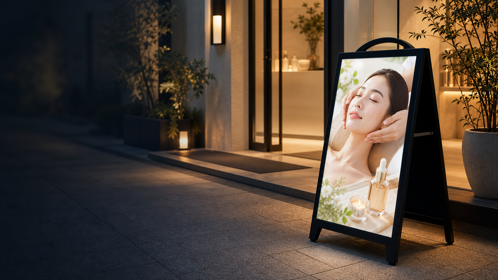
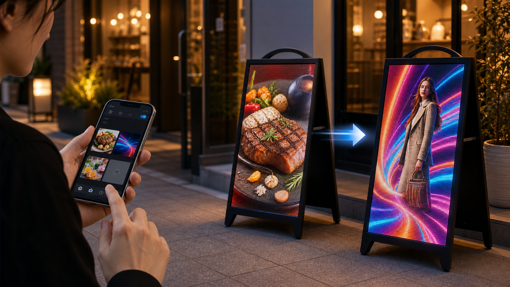
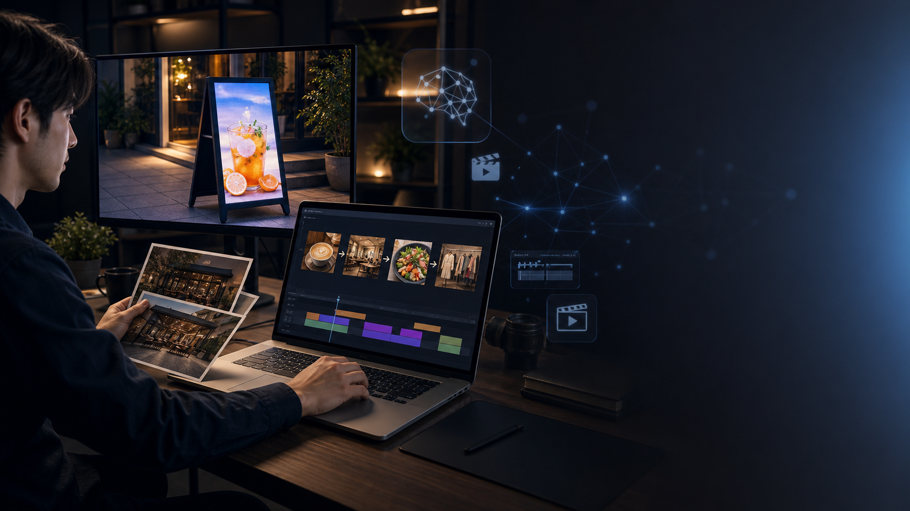
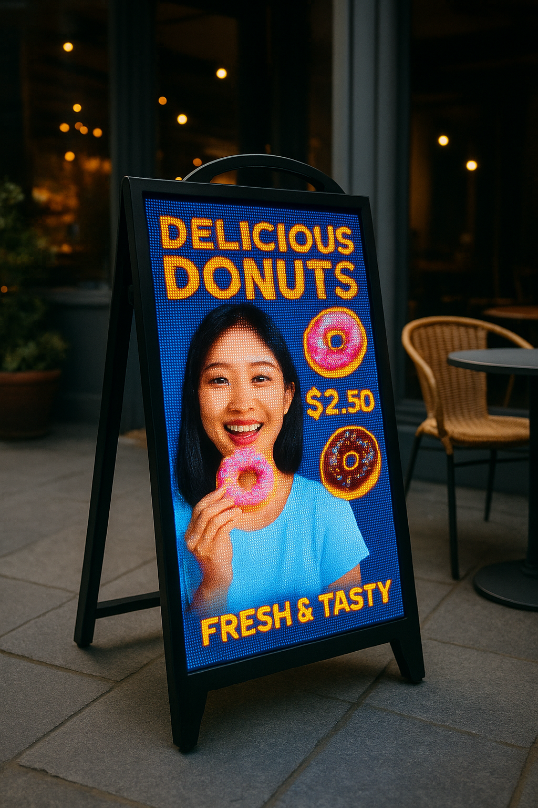

屋外で見える
4500cdの高輝度LED。昼間の店頭でも視認性を確保しやすく、夜は映像の光で存在感を作れます。

屋外用LEDポスターサイネージ
飲食店の店頭に、置くだけで動くメニュー看板を追加。 映像はスマホで切り替え簡単、電源を挿すだけですぐ使える。 持ち手もあるので営業後店内に戻せます！
K-SLIM 2.5 / 4.0
屋外対応
全国送料込み
無料クイックスタート
1年間保証
看板を、貼り替えるものから切り替えるものへ。
4500cdの高輝度LED。昼間の店頭でも視認性を確保しやすく、夜は映像の光で存在感を作れます。
自立式スタンド型。店舗入口、イベント導線、施設前など、見せたい場所へ移動できます。
Wi-Fi、USB、有線LANに対応。季節メニュー、キャンペーン、案内表示をすばやく切り替えられます。

運用を難しくしない
看板を出す、映像を入れる、必要なときに切り替える。K-SLIM 2.5 / K-SLIM 4.0は「デジタルサイネージを導入したいが、運用が難しそう」という店舗の不安を減らすための屋外LED看板です。
デビューキャンペーン 100台限定
解像度と見せたい距離に合わせて、K-SLIM 4.0とK-SLIM 2.5から選べます。価格には全国送料込み、1年間保証、無料クイックスタートサービスを含みます。
遠目でも目立たせたい店頭・入口向け
通常価格 528,000円
478,000円税込
近距離で写真や細かい文字も見せたい店舗向け
通常価格 598,000円
548,000円税込
本体価格に送料を含めて出荷。店舗や施設へ届くまでの費用感をわかりやすくします。
お預かりした映像をあらかじめインストールして出荷。到着後は100V電源に接続してすぐ表示確認できます。
導入後の使い方、映像切り替え、表示確認まで相談できます。はじめてのLEDサイネージでも運用しやすい体制です。
デビューキャンペーンは限定100台です。価格は税込・全国送料込みの表示です。離島・特殊搬入・設置環境・在庫状況はご注文前に確認します。
製品仕様
設置前に確認したい寸法、電源、通信方式をまとめました。電源は100Vコンセント接続で、バッテリー式ではありません。
導入の流れ
入口、歩道側、イベント受付など、まずは見せたい場所を決めます。
無料クイックスタートサービスで、表示したい映像をあらかじめインストールして出荷します。
到着後は100V電源に接続。運用後は時間帯、曜日、季節ごとに内容を切り替えられます。

素材が少なくても始められる
飲食店、美容サロン、クリニック、工場見学、イベント受付など、静止画だけでは伝わりにくい魅力を映像化できます。

よくある確認事項
通行人に遠目から見せる店頭看板ならK-SLIM 4.0、近距離で写真や細かい表示を見せたい場合はK-SLIM 2.5が向いています。設置場所の距離感を確認して提案します。
IP65の屋外対応ですが、極端な暴風雨、冠水、強い衝撃が想定される場所では運用方法の確認が必要です。設置環境を事前にお知らせください。
はい。写真、商品情報、店名、キャンペーン内容をもとに、AIを活用したサイネージ用映像制作を6万円〜10万円で相談できます。完成映像は事前インストールして出荷できます。
はい。無料クイックスタートサービスとして、指定映像をあらかじめ本体へインストールして出荷します。到着後は100V電源に接続して表示確認できます。
在庫状況によりますが、目安はご注文後3週間以内です。デビューキャンペーンは限定100台で、全国送料込みで出荷します。離島・特殊搬入は事前確認になります。